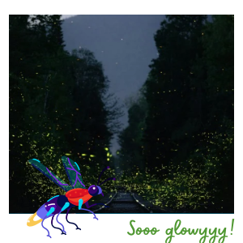

I used to have the most wonderful nights from the whole universe with the help of my dear fireflies. They made the night glow with their beautiful lights! Sadly that has changed so much these last few years. Many scientists say that this human generation will be the last to present them in their full glow! They are getting confused with all the fake light the humans have created and just decided to not glow anymore because it's not necessary. I love you humans, but you don’t know the damage you are doing to me physically and emotionally…
